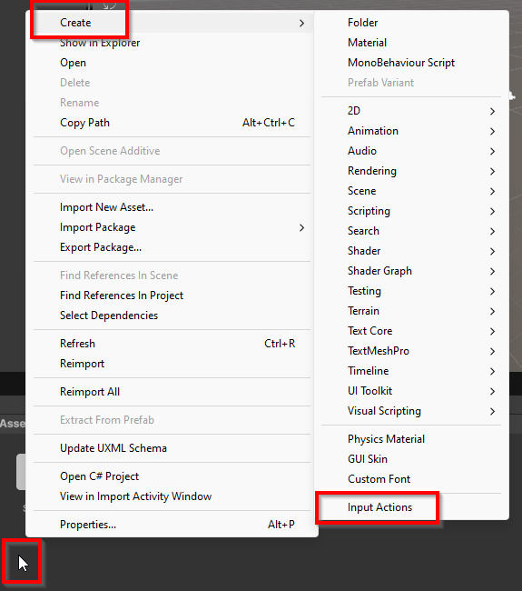
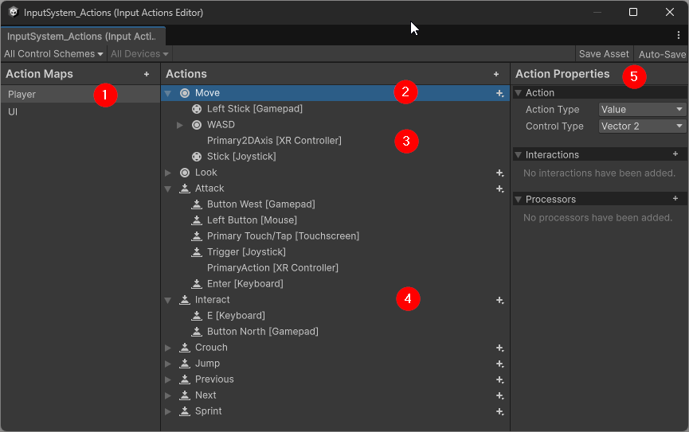
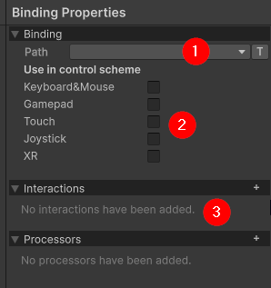
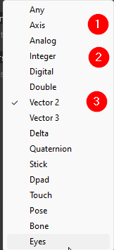
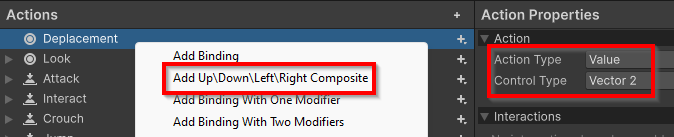
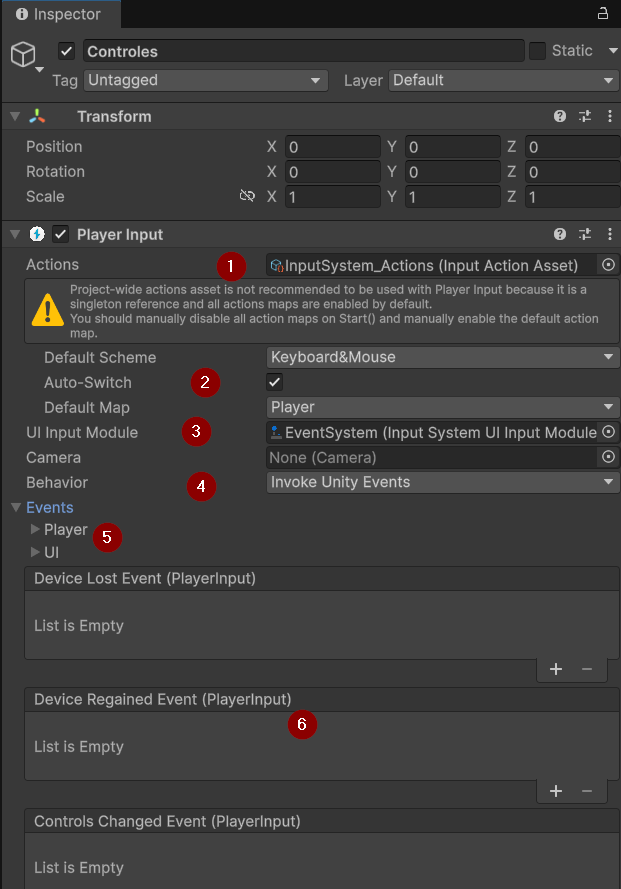
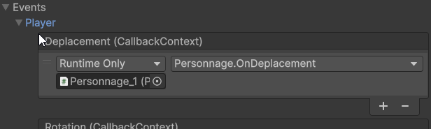

Gérer les contrôles avec le InputSystem
Contenus de la page
4-1 Gestion des entrées de l'utilisateur.
Temps requis
30 minutes
À propos de la page
L'interaction avec les entrées utilisateurs est une composante importante de l'expérience de jeu. Contrairement à d'autres systèmes, les jeux et les simulations demandent souvent d'interagir avec les composantes directement dans le monde du jeu, ou avec des touches du clavier. Les objets qui gèrent la réception des contrôles sont nombreux et il peut devenir ardu de suivre lequel des objets gère quel contrôle.
Unity permet de gérer les contrôles dans chaque objet qui a besoin d'en lire l'information, avec la classe statique Input. Cette méthode longuement utilisée est de plus en plus remplacée par le « nouveau » InputSystem dans Unity. Bien qu'il existe depuis longtemps, il a longtemps un composant séparé, parfois difficile à intégrer, alors que dans les dernières versions il devient mieux intégré.
L'utilisation du InputSystem permet aussi de gérer les contrôles des diverses plateformes et contrôleurs (manettes) à cet endroit, plutôt que cette gestion soit effectuée dans le code.
Le fonctionnement du InputSystem
Installation
Dans Unity 6, le InputSystem est installé d'office. Sinon, il faut l'installer en utilisant le gestionnaire de package et trouver dans le UnityRegistry le package nommé InputSystem.
La gestion des entrées demande la création d'un asset de type Input Action qui définit les relations entre les actions et les touches permettant de réaliser ces actions. Ensuite, un GameObject avec un composant Player Input sert à lier les actions à des objets du jeu. Il devrait y avoir qu'un Player Inputpar scène, en cas de multijoueur (avec écran séparé), il faut utiliser le composant Player Input Manager.


Configurer une action
Dans la vue de l'asset Input Action, on peut configurer les actions. Un Input Action est composé de Action Maps qui sont des groupes de Action. Chacun des Action comporte des Action Properties et des Binding vers les contrôles. Chaque Binding devrait faire référence à une action différente à l'intérieur de son groupe. Par exemple, la touche « A » devrait être liée à au plus une Action dans chacune des Action Maps.
Par défaut, deux Action Maps sont créés, l'une appelée Player qui permet la gestion des actions de la personne qui joue au jeu (déplacement, interagir avec des objets, déplacer la souris...) et une appelée UI qui gère l'interface utilisateur.
`#!c# UI Action Map
L'Action Map de l'interface (UI) est configurée pour s'intégrer avec les composantes d'interface de Unity. De plus, le basculement Action Maps se fait automatiquement dans ce contexte. Il est donc fortement suggéré ne pas modifier les comportements de cet Action Map.


On remarque dans cette capture d'écran :
- Les
Action Maps. Dans la capture celle duPlayer(valeurs par défaut) est sélectionnée. - Les
Actionssont présentées dans le centre de la fenêtre. En développant l'action on affiche sesBindings. L'Actionen (2) lie une entrée sur deux axes, en raison de l'icône de cercle à côté - Les
Bindingspour chacun des contrôleurs possibles. Il n'est pas nécessaire de définir plusieurs contrôleurs dans le cadre du cours, seulement le clavier et la souris. - Une
Actionde type bouton pressé, avec l'icône adéquate. - La vue des
Action Properties. Lors qu'unBindingest sélectionné, alors les paramètres duBindings'affichent dans cette partie de l'interface.
Modifier les Action et les Binding
Un clic droit sur un Action ou un Binding ouvre un menu contextuel pour ajouter, renommer ou supprimer un élément. Pour l'ajout des Bindings, quatre options sont offertes. Pour savoir laquelle choisir, il faut se référer au détail sur les bindings plus loin.
Configurer les actions
Cette section présente la manipulation de l'interface pour ajouter une Action. Cependant, on travaille souvent à partir de ceux définis de base et on les modifie. Le fonctionnement de l'interface est similaire.
Action de bouton
L'action d'un bouton est vérifiée seulement lors d'une interaction avec le contrôle. Unity ne vérifie pas continuellement si ce contrôle a été activé. C'est donc un type efficace pour tous les événements qui ressemblent à ... presser un bouton. Par défaut, l'état du bouton n'est pas vérifié au lancement, mais un paramètre permet de le faire.
La création d'une Action crée un Binding vide. Les options d'un Binding sont :


- Le chemin vers le contrôle. Il est important de sélectionner le bon type d'entrée. Il est possible de taper dans la barre de sélection pour filtrer les contrôles disponibles.
- Le type de contrôleur (clavier, souris, manette, toucher ...). Cela peut sembler redondant avec la sélection du contrôle, mais il est important de l'indiquer pour gérer le passage entre les types de contrôleurs.
- Les interactions permettent de modifier l'interaction nécessaire avec le contrôle. Par défaut, dès que le bouton est pressé, l'action est activée. Une interaction permet de modifier ce comportement, par exemple, en attendant (bouton tenu enfoncé) un certain délai ou en répétant le pressage (tapoter le bouton).
Types de Binding
Les types de Binding disponibles varient selon le type d'Action.
Ajouter un modificateur
Pour ajouter un contrôle à deux ou trois touches (comme un Ctrl+Z), il faut sélectionner le bon type de Binding, soit ceux avec un ou deux Modifier. Le Modifier sera la touche qui vient modifier le contrôle (comme les touches Ctrl Alt ou Shift)


Actions multiples avec le même Binding
Attention, si une Action est lié à une touche et une autre Action est liée à la touche avec un modifier, les deux Action sont lancées.
Action de valeur
Une action de valeur lit continuellement les entrées et supporte une variété de types de retour. Cela permet, entre autres, de retourner une abstraction des contrôles de plusieurs types. Par exemple, on peut retourner un vecteur en deux dimensions pour les déplacements dans le plan (composante vers la droite et composante vers l'avant) au lieu de lire individuellement les quatre touches W A S et D .


- Le contrôle
axisretourne une valeur (dans unfloat) sur un axe de -1 à 1. Si le contrôle est analogique (comme un levier de contrôleur), alors la force appliquée est considérée. Donc un levier à moitié de son amplitude retourne 0.5. Au clavier, les valeurs -1 et 1 sont retournées, selon la touche appuyée. Utiliser ce contrôle au clavier inclut deuxbinding, un positif et un négatif. - Le contrôle
integerretourne toujours une valeur entière pour le contrôle utilisé. - Le contrôle
vector2retourne un vecteur entre deux dimensions, soit la combinaison de deuxaxis. On l'utilise par exemple pour les déplacements. Utiliser ce contrôle au clavier inclut quatrebinding, un positif et un négatif pour chaque axe.


Lire des actions dans les scripts
Une fois les actions configurées, il faut lier l'asset des InputActions avec le jeu. Pour ce faire, on utilise un composant PlayerInput que l'on ajoute normalement à un GameObject vide.


- Actions : L'asset des
InputActionsqui définit les desactionspossibles du jeu; - Paramètres par défaut : l'entrée par défaut lorsque le jeu est lancé;
- UI Input Module : le module de gestionnaire d'événements (le game object EventSystem). Il est généralement créé automatiquement lorsqu'on crée le permier
Canvasdu jeu et devrait se lier automatiquement si lePlayerInputest déjà en place; - Behaviour : le comportement pour envoyer les messages vers les autres
GameObject. Les différents comportement sont détaillés ci-dessous.; - Events : les gestionnaires d'événements pour les
ActionMaps. Peut varier selon le type de behaviour sélectionné; - *Événements de gestion des contrôles : liste d'événement universels comme la perte d'un dispositif d'entrée ou un changement de contrôleur (ex. passage du clavier à un manette).
Les comportements (behaviour)
4 comportements pour la gestion des messages entre le InputSystem et les GameObject sont possibles :
| Comportement | Fonctionnement | Avantage | Incovénient |
|---|---|---|---|
| Send Messages | Transmet un message en utilisant l'une des fonctions indiqué dans le message au GameObject auquel le PlayerInput est attaché. |
Léger, utile lorsque toutes les entrés sont gérés par le même GameObject |
Centralise tous les message, prévient la croissance du jeu |
| Broadcast Messages | Transmet un message en utilisant l'une des fonctions indiqué dans le message au GameObject auquel le PlayerInput est attaché. Le message descend dans la hiérarchie, donc un des enfants peut aussi le recevoir. |
Léger, utile lorsque toutes les entrées sont gérées par la même hiérarchie de GameObject |
Centralise tous les message, prévient la croissance du jeu |
| Invoke Unity Events | Invoque un événement sur n'importe quel GameObject abonné avec le wrapper UnityEvent |
Offre de la flexibilité dans la gestion des contrôles, permet l'assignation dans l'interface de Unity | L'appel des UnityEvent est lente, peut être plus difficile de trouver les récepteurs d'événement |
| Invoke C Sharp Events | Invoque un événement sur n'importe quel GameObject abonné |
Offre de la flexibilité dans la gestion des contrôles | Peut être plus difficile de trouver les récepteurs d'événement |
Dans le cadre du cours, on utilise Invoke Unity Events, mais beaucoup préfèrent la flexibilité et la rapidité de Invoke C Sharp Events pour les jeux plus complexes.
Utiliser entièrement des scripts
Dans un jeu volumineux, on préfèrera faire un ou plusieurs scripts dédiés à la liaison des contrôles avec l'ajout manuel des événements.
Les trois invocations de l'événement
Une InputAction sera évoquée trois fois à chaque fois que le contrôle associé est utilisé :
- started : lorsque l'interaction avec le contrôle commence (on commence à appuyer sur la touche)
- performed : lorsque l'interaction avec le contrôle se complète (par exemple, si on configure l'événement pour qu'on doive appuyer sur la touche 0.2 secondes). Il peut être en même temps que started pour les contrôles instannés
- canceled : lorsque l'interaction avec le contrôle se termine (on relâche la touche)
Erreur fréquente
Si vos événements se comportent bizarrement, il se peut simplement que votre logique de contrôle ne prenne pas en compte que votre méthode de gestion d'événement est appelée trois fois. Dans la section sur le CallbackContext, on verra comment régler ce problème.
Gestion avec Send Messages ou Broadcast Messages
Supposons que l'on a créé un InputAction nommé Deplacement qui devrait déplacer le personnage. La structure du projet devrait contenir un GameObject personnage auquel on attache Le PlayerInput et un script de gestion du personnage Personnage.
| Personnage.cs | |
|---|---|
Si on utilise Broadcast Messages, alors le script Personnage peut être attaché à un GameObject enfant de celui qui a le PlayerInput
Gestion avec Invoke Unity Events
Avec les UnityEvent on peut lier l'événement directement dans l'interface. Auquel cas, on utilise le contrôle tel qu'expliqué dans la section des UnityEvent. L'événement est lancé aux trois moments d'invocation. Le nom de la méthode qui gère l'événement n'a pas d'importance.
Toutes les méthodes uitlisée pour gérer un événement peuvent accepter un seul paramètre de type CallbackContext.
Dans le contexte de l'exemple précédent, sous le bloc player dans le PlayerInput, on trouverait l'événement Deplacement et l'on pourrait y ajouter un gestionnaire d'événement.


Gestion avec Invoke C Sharp Events
Cette méthode la plus versatile demande un peu plus de code à mettre en place. Il faut manuellement abonner l'objet qui doit répondre à l'événement. On fait cette affectation dans le Start. Cela peut demander à ce que le PlayerInput soit un Singleton ou soit référé dans l'objet géré. On doit affecter le gestionnaire à chacune des invocations que l'on souhaite gérer. C'est la seule méthode qui permet d'assigner un gestionnaire différent selon le moment de l'exécution de l'action.
Il faut se référer à la page des événements pour les syntaxes utilisés.
Utilise le CallbackContext
Le CallbackContext permet d'obtenir des informations sur l'événement dans la méthode qui gère la réponse au contrôle. On peut connaître le moment du cycle d'invocation (started, performed ou canceled) avec les propritétés boolééennes du même nom de l'objet CallbackContext. On peut obtenir les valeurs passés par le contrôles (dans un contrôle axis ou vector2 par exemple) avec la méthode générique ReadValue.